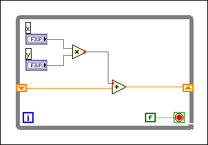
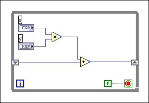

If you perform an operation within a loop that increases the size of fixed-point data, such as multiplication or incrementing, and pass the result of the operation into a shift register, LabVIEW converts the output data to floating-point representation to avoid potential data loss from overflow of the fixed-point data. Overflow can occur because the word length of the fixed-point value can grow exponentially with each iteration of the loop, depending on the operation you perform within the loop.
The following block diagram displays an orange wire where LabVIEW automatically converted fixed-point data to floating-point. The coercion dots indicate that LabVIEW is discarding bits of the output values of the Numeric functions.
If you do not want LabVIEW to convert the data to floating-point automatically, you must configure the output settings for the function that processes data from the shift register to specify the output data type and how the function handles overflow, should it occur.
For example, in the previous block diagram, you can configure the Add function to output only fixed-point values. After you configure the output data type to be fixed-point, the orange wire on the block diagram changes color to indicate that it carries fixed-point data.
The following image displays the block diagram appearance after you configure the Add function to output fixed-point values. The blue coercion dots on the Numeric functions indicate that you have configured output settings for those functions.
